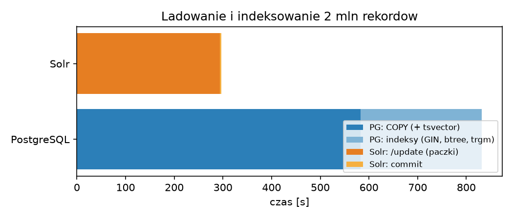
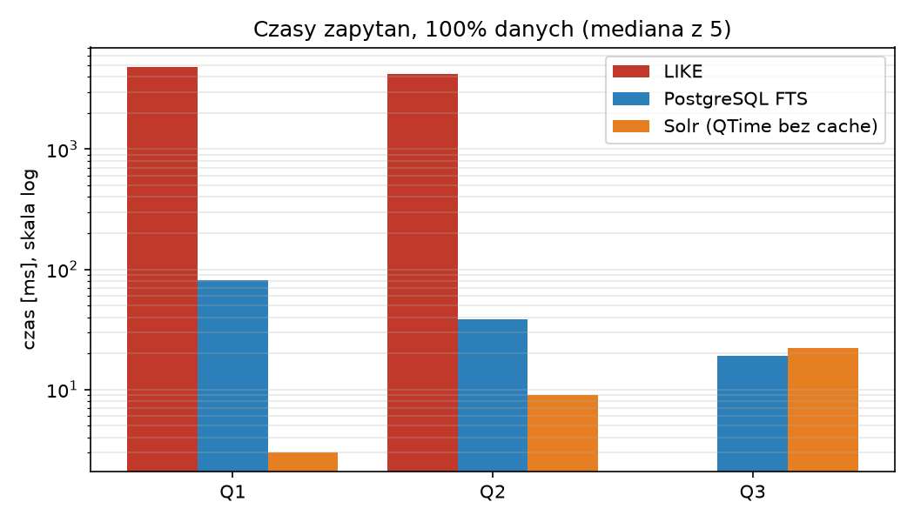
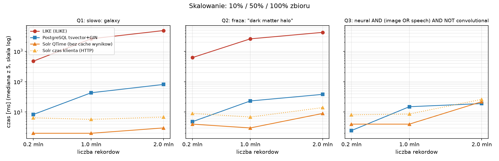
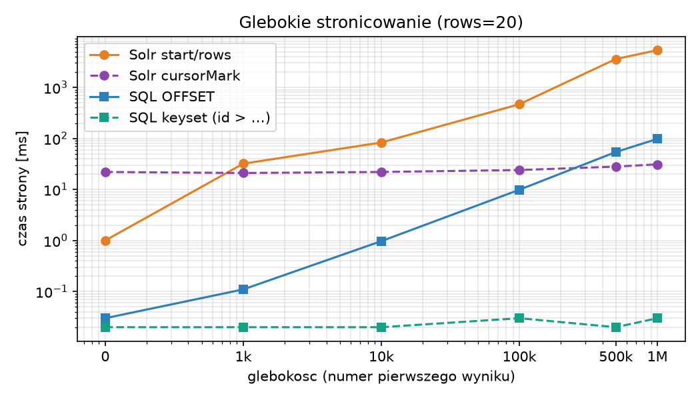

| Element | Wartość |
|---|---|
| Procesor | Intel Core Ultra 5 226V (8 rdzeni / 8 wątków) |
| Pamięć RAM | 16 GB (15,6 GB dostępne); Docker Desktop (WSL2): 7,5 GB, 8 CPU |
| Dysk | Samsung NVMe SSD 512 GB (MZAL8512HFLU) |
| System | Windows 11 Home 10.0.26200, Docker Desktop 29.1.2 (WSL2) |
| PostgreSQL | 17.11 (obraz postgres:17); shared_buffers=1GB, work_mem=64MB, maintenance_work_mem=1GB, do 4 workerów równoległych |
| Solr | 10.1.0 (obraz solr:10), tryb SolrCloud, 1 shard / 1 replika, SOLR_HEAP=3g |
Oba silniki działały jednocześnie w kontenerach na tej samej maszynie i miały do dyspozycji te same zasoby. Klient (Python) działał na hoście i łączył się przez localhost.
| Cecha | Wartość |
|---|---|
| Źródło | Metadane arXiv (Cornell University), mirror gfissore/arxiv-abstracts-2021 na Hugging Face; oryginał na Kaggle: Cornell-University/arxiv |
| Licencja | CC0 1.0 – domena publiczna |
| Liczba rekordów | 1 999 486 (oryginalne rekordy, bez powielania) |
| Rozmiar | 0,9 GB jsonl.gz → 2,1 GB CSV; PostgreSQL: 4,9 GB (tabela 4,1 GB + indeksy); Solr: 2,8 GB indeksu |
| Tekst | title (śr. 72 znaki) + abstract (śr. 909 znaków), język angielski |
| Pola kategoryczne | archive – 38 wartości; primary_category – 172 wartości; categories – wielowartościowe |
| Pola liczbowe | year 1991–2021 (wyznaczony z identyfikatora YYMM), n_versions, abstract_len |
| Klucz | id – identyfikator arXiv (np. 2010.02636, astro-ph/0606447) |
Przygotowanie danych: skrypt prepare_data.py strumieniowo czyta plik jsonl.gz i zapisuje CSV. Normalizuje białe znaki, wylicza archive (część kategorii przed kropką) i year, a także pole techniczne bucket = crc32(id) mod 100, które deterministycznie wycina podzbiory 10% i 50%. Pola authors i submitter zostały pominięte, bo zawierają dane osobowe.
Przykładowy rekord:
id=2010.02636 | title="Neural Speech Synthesis for Estonian" | primary_category=cs.CL | archive=cs categories=[cs.CL] | year=2020 | n_versions=1 | abstract_len=1047 abstract="This technical report describes the results of a collaboration between the NLP research group at the University of Tartu and the Institute of Estonian Language on improving neural speech synthesis for Estonian. ..."
Powielanie danych: nie było potrzebne, bo zbiór ma prawie 2 mln oryginalnych rekordów, czyli 4× więcej niż wymagane minimum. Dzięki temu w top-10 nie ma duplikatów, a liczności facetów odpowiadają rzeczywistemu rozkładowi.
CREATE TABLE arxiv (
id varchar(32) PRIMARY KEY, title text NOT NULL, abstract text NOT NULL,
primary_category varchar(32) NOT NULL, archive varchar(32) NOT NULL, categories text NOT NULL,
year smallint NOT NULL, n_versions smallint NOT NULL, abstract_len integer NOT NULL, bucket smallint NOT NULL,
tsv tsvector GENERATED ALWAYS AS (
setweight(to_tsvector('english', title), 'A') ||
setweight(to_tsvector('english', abstract), 'B')) STORED );
CREATE INDEX arxiv_tsv_gin ON arxiv USING gin (tsv); -- indeks pełnotekstowy (446 MB)
CREATE INDEX arxiv_archive_idx ON arxiv (archive); CREATE INDEX arxiv_year_idx ON arxiv (year);
CREATE INDEX arxiv_title_trgm ON arxiv USING gin (title gin_trgm_ops); -- pg_trgm, rozszerzenie E2 (299 MB)
Kolumna tsvector jest generowana (STORED). Wyliczają ją COPY i każda zmiana rekordu, więc nie trzeba pisać triggerów. Konfiguracja english to parser PostgreSQL, stoplista angielska (127 słów) i stemmer Snowball English. Wagi A (tytuł) i B (abstrakt) są wykorzystywane przez ts_rank_cd.
Każda kolekcja (arxiv, arxiv_50, arxiv_10) ma własny configset, będący kopią _default. Tryb schemaless jest wyłączony (set-user-property update.autoCreateFields=false), a pola dodaje Schema API z pliku solr/schema.json.
| Pole | Typ | indexed | stored | docValues | multiValued | Uzasadnienie |
|---|---|---|---|---|---|---|
| id | string | ✔ | ✔ | ✔ | uniqueKey; sortowanie pomocnicze i cursorMark wymagają docValues | |
| title | text_en_lab | ✔ | ✔ | przeszukiwane w eDisMax (waga 2,5); stored do wyświetlenia i podświetlania | ||
| abstract | text_en_lab | ✔ | ✔ | główny tekst; stored do hl; storeOffsetsWithPositions przyspiesza unified highlighter | ||
| text | text_en_lab | ✔ | ✘ | ✔ | copyField title+abstract – odpowiednik kolumny tsv; nie przechowujemy (oszczędność miejsca) | |
| archive, primary_category | string | ✔ | ✔ | ✔ | filtry fq (indexed) i facety (docValues = kolumnowy dostęp, bez un-invertingu na stercie) | |
| categories | string | ✔ | ✔ | ✔ | ✔ | praca może mieć wiele kategorii |
| year | pint | ✔ | ✔ | ✔ | zakresy fq=year:[a TO b], sortowanie i facet.range | |
| n_versions, abstract_len | pint | ✘ | ✔ | ✔ | tylko do sortowania/funkcji (docValues); nie filtrujemy, więc indeks zbędny | |
| bucket | pint | ✔ | ✘ | ✔ | pole techniczne do podzbiorów; nie zwracane |
Łańcuch analizy text_en_lab (jawnie zdefiniowany typ pola):
index: StandardTokenizer → LowerCase → Stop(lang/stopwords_en.txt) → EnglishPossessive → SnowballPorter(English)
query: StandardTokenizer → LowerCase → ManagedSynonymGraph("english") → Stop → EnglishPossessive → SnowballPorter(English)
Zamiast PorterStemFilter z domyślnego text_en wybraliśmy SnowballPorter (English). To ten sam algorytm, którego używa PostgreSQL, więc oba systemy dają takie same rdzenie (galaxies → galaxi, running → run). Dzięki temu różnice w wynikach wynikają z tokenizacji i rankingu, a nie ze stemmera. Synonimy działają tylko po stronie zapytania, więc ich zmiana wymaga przeładowania kolekcji, ale nie reindeksacji.
| System | Krok | Czas | Uwagi |
|---|---|---|---|
| PostgreSQL | COPY z CSV (w tym wyliczenie tsvector) | 582,6 s | 2,0 mln wierszy; ~3 430 wierszy/s |
CREATE INDEX … USING gin (tsv) | 172,4 s | 446 MB | |
| btree (archive, year) + GIN trigram (title) + ANALYZE | 76,8 s | trigram: 299 MB | |
| Razem do gotowości FTS | 755 s | COPY + GIN | |
| Solr | /update, paczki po 5 000 dok. JSON, 4 wątki | 293,5 s | ~6 800 dok./s |
jeden commit na końcu | 2,9 s | indeks 2,82 GB | |
| Razem | 296,4 s | analiza tekstu + indeks odwrócony | |
| Solr 50% / 10% | indeksowanie podzbiorów | 148,6 s / 36,3 s | 1,29 GB / 426 MB |

Solr zaindeksował zbiór ok. 2,5× szybciej. W PostgreSQL najdroższy jest COPY, który oprócz zapisu wiersza (z TOAST dla długich abstraktów) wylicza dwa to_tsvector, a potem osobno budowany jest GIN. Solr przetwarza paczki równolegle (4 wątki klienta, wielowątkowy indexer), zapisuje segmenty i scala je w tle. Tabela w PG zajmuje więcej miejsca (4,1 GB), bo przechowuje zarówno tekst, jak i wyliczony tsvector.
| Zapytanie | PostgreSQL | Solr (q) | |
|---|---|---|---|
| Q1 | słowo w dowolnej formie | tsv @@ to_tsquery('english','galaxy') | text:galaxy |
| Q2 | fraza | tsv @@ phraseto_tsquery('english','dark matter halo') | text:"dark matter halo" |
| Q3 | A ∧ (B ∨ C) ∧ ¬D | to_tsquery('english','neural & (image | speech) & !convolutional') | +text:neural +(text:image text:speech) -text:convolutional |
Wszystkie zapytania Solra wysyłamy z parametrami q, fl=id,title,year,archive,score, sort=score desc,id asc i rows=10. Pełne URL-e do wklejenia w przeglądarkę oraz SQL są w pliku ZAPYTANIA.md, np.:
http://localhost:8983/solr/arxiv/select?q=text%3Agalaxy&fl=id%2Ctitle%2Cyear%2Carchive%2Cscore&sort=score+desc%2Cid+asc&rows=10
| Zapytanie | LIKE | SQL FTS | Solr numFound | czas LIKE | czas SQL FTS | QTime Solr | QTime bez cache |
|---|---|---|---|---|---|---|---|
| Q1 galaxy | 60 580 | 84 073 | 84 129 | 4 854 ms | 81,4 ms | 0 ms | 3 ms |
| Q2 "dark matter halo" | 5 105 | 5 413 | 5 423 | 4 233 ms | 38,3 ms | 1 ms | 9 ms |
| Q3 neural ∧ (image ∨ speech) ∧ ¬convolutional | – | 10 692 | 10 713 | – | 19,0 ms | 0 ms | 22 ms |
LIKE realizujemy jako ILIKE na title i abstract, bo LIKE w PostgreSQL rozróżnia wielkość liter i nie znalazłby „Galaxy” na początku zdania. Czasy SQL to Execution Time z EXPLAIN (ANALYZE, BUFFERS) dla SELECT count(*). Czas po stronie klienta był praktycznie taki sam (różnica < 3 ms). „QTime bez cache” to zapytanie q={!cache=false}…, które pomija queryResultCache, więc każde powtórzenie jest wykonywane od nowa. Bez tej opcji Solr odpowiada z cache wyników w 0–1 ms. Czas klienta (HTTP) dla Solra wynosił 3,5–26 ms.
'%galaxy%' nie pasuje do galaxies. Stemmer sprowadza obie formy do galaxi. Dla frazy LIKE gubi halos/haloes, myślniki (dark-matter halo) i podwójne spacje.galaxy/quasar, star/galaxy czy LMC/Galaxy jak ścieżkę pliku (jeden token), a StandardTokenizer (UAX#29) dzieli je na słowa. Odwrotnie przy galaxies:theoretical: UAX#29 nie tnie słowa na dwukropku między literami, a PG tak. W Q2 słowa złożone z myślnikiem (matter-halo, halo-dominated) PG zapisuje jako złożenie na innych pozycjach, przez co fraza nie pasuje, a Solr dzieli myślnik i frazę znajduje (+10 dokumentów).stopwords_en.txt w Solrze 35 (np. we, were, only zostają w indeksie Solra, zob. rozdz. 11.4). Nasze zapytania nie zawierają stop-słów, więc na liczności to nie wpływa. Wpływa to jednak na pozycje słów, a więc na frazy ze stop-słowem w środku.| Zapytanie | Solr fq / sort | SQL wyniki | Solr numFound | SQL top-10 | Solr QTime |
|---|---|---|---|---|---|
| Q1 | year:[2015 TO *] / year desc,id asc | 29 022 | 29 048 | 289 ms | 0 ms |
| Q2 | archive:astro-ph / year desc,id asc | 5 156 | 5 166 | 40 ms | 1 ms |
| Q3 | archive:cs / year desc,id asc | 7 999 | 8 018 | 52,5 ms | 2 ms |
W Q1 top-10 z filtrem i sortowaniem po roku kosztuje w SQL 289 ms. Planista musi pobrać z tabeli wszystkie 84 tys. dopasowań (bitmap heap scan), sprawdzić rok i posortować. Solr korzysta z filterCache dla fq i z docValues dla sortowania.
SQL: ts_rank_cd(tsv, q, 1) z domyślnymi wagami {D,C,B,A} = {0,1; 0,2; 0,4; 1,0} i normalizacją 1 (podział przez 1 + log długości dokumentu). Solr: eDisMax, qf=title^2.5 abstract, BM25. Waga 2,5 odpowiada stosunkowi wag A/B w PostgreSQL.
| Zapyt. | Top-3 PostgreSQL (ts_rank_cd) | Top-3 Solr (eDisMax, BM25) | wspólne w top-10 | czas SQL |
|---|---|---|---|---|
| Q1 | 1204.2232 Galaxy-galaxy(-galaxy) lensing as a sensitive probe… 0807.4932 Galaxy Clustering & Galaxy-Galaxy Lensing… astro-ph/0606447 Galaxy Galaxy Lensing as a Probe of Galaxy Dark Matter Halos |
1204.2232 Galaxy-galaxy(-galaxy) lensing as a sensitive probe… 2111.11467 An inventory of galaxies in cosmic filaments… astro-ph/0304203 Quasar-Galaxy and Galaxy-Galaxy Cross-Correlations… | 2 / 10 | 365 ms |
| Q2 | 1804.04492 Stellar Velocity Dispersion: Linking Quiescent Galaxies… 1807.00879 Dynamical Imprint of Dark Matter Halo and Interstellar Gas… 1803.00767 Black Hole Space-time In Dark Matter Halo |
0709.0434 Relaxed Dark Matter Halos 0711.0466 A Model for Dark Matter Halos 0812.2033 The Graininess of Dark Matter Haloes | 0 / 10 | 72 ms |
| Q3 | 2002.09286 Efficient Trainable Front-Ends for Neural Speech Enhancement 1912.08771 Computationally Efficient Neural Image Compression 2108.01199 Neural Image Representations for Multi-Image Fusion… |
2003.13217 Deep Residual Neural Networks for Image in Speech Steganography 2010.02636 Neural Speech Synthesis for Estonian 2106.15561 A Survey on Neural Speech Synthesis | 1 / 10 | 104 ms |
Czas Solra (eDisMax, rows=10) wynosił 0 ms QTime z cache i ok. 3,5–4 ms po stronie klienta.
id asc.ts_rank_cd trzeba policzyć dla każdego dopasowania, a GIN nie przechowuje pozycji, więc tsvector jest czytany z tabeli. Dla Q1 daje to 365 ms (84 tys. wierszy) wobec ok. 4 ms w Solrze, który liczy score w trakcie przechodzenia list postingów i trzyma top-k na kopcu.SELECT archive, count(*) c FROM arxiv
WHERE tsv @@ to_tsquery('english', 'neural & (image | speech) & !convolutional')
GROUP BY archive ORDER BY c DESC; -- 23,9 ms
| archive | cs | eess | stat | q-bio | physics | astro-ph |
|---|---|---|---|---|---|---|
| SQL GROUP BY | 7 999 | 1 561 | 306 | 244 | 234 | 171 |
| Solr facet.field (QTime 1 ms) | 8 018 | 1 562 | 306 | 244 | 235 | 171 |
Jedno zapytanie Solra z dwoma facetami polowymi i jednym zakresowym (kubełki 5-letnie):
/solr/arxiv/select?q=text:galaxy&rows=0&facet=true&facet.field=archive&facet.field=primary_category &facet.limit=10&facet.mincount=1&facet.range=year&facet.range.start=1991&facet.range.end=2026&facet.range.gap=5
Odpowiedniki w SQL: trzy osobne zapytania GROUP BY (archive; primary_category; kubełek roku 1991 + ((year-1991)/5)*5) oraz jedno zapytanie z GROUPING SETS ((archive), (primary_category), (kubełek)).
| Wariant | Czas (mediana z 5) |
|---|---|
| Solr: 2× facet.field + facet.range (jedno zapytanie) | 3 ms QTime (6,6 ms klient) |
| SQL: GROUP BY archive | 112,6 ms |
| SQL: GROUP BY primary_category | 106,3 ms |
| SQL: GROUP BY kubełek roku | 108,4 ms |
| SQL: suma trzech zapytań | 327,4 ms |
| SQL: jedno zapytanie GROUPING SETS | 129,0 ms |
| Kubełek roku | 1991 | 1996 | 2001 | 2006 | 2011 | 2016 | 2021 |
|---|---|---|---|---|---|---|---|
| Solr facet.range | 1 372 | 9 121 | 13 357 | 16 517 | 18 732 | 20 815 | 4 215 |
| SQL GROUP BY | 1 370 | 9 117 | 13 349 | 16 509 | 18 718 | 20 795 | 4 215 |
| primary_category | astro-ph | astro-ph.GA | astro-ph.CO | astro-ph.HE | astro-ph.SR | astro-ph.IM | gr-qc |
|---|---|---|---|---|---|---|---|
| Solr | 32 547 | 22 247 | 17 741 | 5 504 | 1 916 | 1 361 | 967 |
| SQL | 32 530 | 22 238 | 17 724 | 5 500 | 1 914 | 1 355 | 967 |
Wyniki są zgodne co do rozkładu. Różnice o kilka–kilkanaście dokumentów to dokładnie te 56 dodatkowych trafień Solra z rozdz. 5.1 (tokenizacja). Facety są ok. 40× szybsze od GROUPING SETS i ok. 100× od trzech osobnych zapytań. Solr liczy wszystkie facety w jednym przebiegu po zbiorze trafień (bitset), czytając wartości z kolumnowych docValues. PostgreSQL każde GROUP BY zaczyna od ponownego wykonania zapytania pełnotekstowego i pobrania 84 tys. wierszy z tabeli. GROUPING SETS pobiera je raz, stąd przyspieszenie 2,5×. Facet zakresowy w SQL wymaga ręcznego wyrażenia kubełka, a w Solrze to jeden parametr.
Solr: hl=true&hl.fl=title,abstract&hl.method=unified&hl.fragsize=160; PostgreSQL: ts_headline('english', abstract, q, 'MaxWords=25, MinWords=10, MaxFragments=1') dla top-3.
| Zapyt. | Solr (unified highlighter) | PostgreSQL (ts_headline) |
|---|---|---|
| Q1 | title: Galaxy-galaxy(-galaxy) lensing as a sensitive probe of galaxy evolution abstract: …the mass environment of galaxies. We investigate how galaxy-galaxy(-galaxy) lensing… |
…the mass environment of galaxies. We investigate how galaxy-galaxy(-galaxy) lensing can be used to test |
| Q2 | title: Relaxed Dark Matter Halos (fraza zaznaczona jako całość) | …observational probe of dark matter halo velocity dispersion and mass. Stellar velocity dispersion is proportional to dark |
| czas | Q1: 3 ms, Q2: 2 ms (QTime, top-3) | Q1: 332 ms, Q2: 69 ms (top-3 z rankingiem) |
Oba mechanizmy podświetlają formy odmienione (galaxies). Unified highlighter w Solrze podświetla frazę jako całość (dopasowanie zapytania, a nie pojedynczych słów) i obsługuje wiele pól naraz. ts_headline zaznacza pojedyncze słowa, także poza frazą (ostatnie „dark”). Musi też ponownie analizować pełny tekst dokumentu, dlatego stosujemy go tylko do top-k. Większość jego czasu to jednak ranking z rozdz. 6.
Metodyka: te same dane (1 999 486 rekordów) i te same zapytania w obu systemach. Każde zapytanie jest wykonywane raz na rozgrzanie (nieliczone), a potem 5 razy, i podajemy medianę. W SQL mierzymy Execution Time z EXPLAIN (ANALYZE, BUFFERS, FORMAT JSON) oraz osobno czas klienta (psycopg). W Solrze mierzymy QTime i czas klienta (requests, HTTP keep-alive). Nie mierzyliśmy zimnego startu: wszystkie czasy dotyczą rozgrzanego cache stron (PG shared_buffers i cache plików systemu). Wszystkie surowe pomiary są w results/*.json.

LIKE wymaga pełnego skanu 4,1 GB tabeli (Parallel Seq Scan, 4 workery) i porównania podciągu w każdym abstrakcie, co daje ok. 4,2–4,9 s. Indeks GIN skraca to o dwa rzędy wielkości (19–81 ms). Czas FTS w PG rośnie z liczbą trafień: Q1 (84 tys.) jest wolniejsze od Q3 (10 tys.), bo bitmap heap scan i tak sprawdza (recheck) każdy znaleziony wiersz w tabeli. Solr bez cache wyników mieści się w 3–22 ms, a z cache odpowiada w 0–1 ms.
| Rekordy | Zapyt. | wyn. LIKE | wyn. FTS | numFound | LIKE | SQL FTS | Solr (bez cache) | Solr klient |
|---|---|---|---|---|---|---|---|---|
| 199 875 (10%) | Q1 | 6 106 | 8 430 | 8 438 | 475 ms | 8,3 ms | 2 ms | 6,5 ms |
| Q2 | 521 | 555 | 557 | 623 ms | 4,8 ms | 4 ms | 9 ms | |
| Q3 | – | 1 113 | 1 116 | – | 2,5 ms | 4 ms | 8 ms | |
| 999 798 (50%) | Q1 | 30 303 | 42 023 | 42 054 | 2 599 ms | 43,2 ms | 2 ms | 5,7 ms |
| Q2 | 2 573 | 2 718 | 2 724 | 2 587 ms | 23,2 ms | 3 ms | 6,9 ms | |
| Q3 | – | 5 494 | 5 507 | – | 15,0 ms | 4 ms | 8,5 ms | |
| 1 999 486 (100%) | Q1 | 60 580 | 84 073 | 84 129 | 4 854 ms | 81,4 ms | 3 ms | 6,9 ms |
| Q2 | 5 105 | 5 413 | 5 423 | 4 233 ms | 38,3 ms | 9 ms | 14 ms | |
| Q3 | – | 10 692 | 10 713 | – | 19,0 ms | 22 ms | 26 ms |

Zrealizowaliśmy cztery rozszerzenia, choć wymagane są trzy (1 na 4.0 i 2 na 5.0): E1 synonimy przez REST, E2 odporność na literówki (fuzzy kontra LIKE/pg_trgm), E3 głębokie stronicowanie (start/rows kontra cursorMark), E4 własny typ pola z zakładką Analysis kontra to_tsvector.
Typ text_en_lab ma po stronie zapytania filtr ManagedSynonymGraphFilterFactory (zasób english). Grupy dodajemy żądaniami REST, a potem przeładowujemy kolekcję. Indeks się nie zmienia, bo synonimy działają tylko w zapytaniu:
PUT http://localhost:8983/solr/arxiv/schema/analysis/synonyms/english
["cnn", "convolutional neural network"] (oraz 3 kolejne grupy)
GET http://localhost:8983/solr/admin/collections?action=RELOAD&name=arxiv
| Grupa synonimów | Zapytanie | przed | po | SQL: ręczny OR (a | b<->c) |
|---|---|---|---|---|
| cnn ⇔ convolutional neural network | cnn | 10 601 | 22 420 | 19 357 |
| "convolutional neural network" | 15 852 | 19 541 | ||
| gw ⇔ gravitational wave | gw | 4 022 | 19 218 | 16 621 |
| "gravitational wave" | 15 101 | 16 714 | ||
| qcd ⇔ quantum chromodynamics | qcd | 39 276 | 40 463 | 40 298 |
| "quantum chromodynamics" | 2 478 | 40 448 | ||
| bec ⇔ bose einstein condensate | bec | 3 821 | 11 369 | 11 222 |
| "bose einstein condensate" | 9 874 | 11 237 |
Po dodaniu synonimów zapytanie o skrót i o pełną nazwę zwraca (prawie) ten sam zbiór. Najmocniej widać to dla „quantum chromodynamics” (2,5 tys. → 40 tys.), bo autorzy niemal zawsze piszą „QCD”. Zapytanie jednowyrazowe (cnn) rozwija się do cnn OR (convolut AND neural AND network) bez wymogu sąsiedztwa, stąd nieco więcej wyników niż dla frazy. Wynik jest bliski ręcznie napisanemu w SQL to_tsquery('cnn | convolutional<->neural<->network'). Słownik synonimów można też podpiąć w PostgreSQL (CREATE TEXT SEARCH DICTIONARY … TEMPLATE=thesaurus), ale wymaga to pliku na serwerze bazy i przebudowy kolumny tsvector, a REST API Solra zmienia słownik bez reindeksacji.
Wyszukiwanie w tytułach z celowym błędem. Solr: title:galxy~2 (odległość edycyjna ≤ 2). LIKE: title ILIKE '%galxy%'. pg_trgm: 'galxy' <% title (word_similarity ≥ 0,6, indeks GIN trigram).
| Literówka (poprawnie) | Solr ~2 | QTime | Solr poprawne słowo | LIKE | pg_trgm | czas pg_trgm |
|---|---|---|---|---|---|---|
| galxy (galaxy) | 40 726 | 0–1 ms | 38 271 | 0 | 160 | 186 ms |
| quantim (quantum) | 120 180 | 1 ms | 104 030 | 0 | 119 152 | 1 295 ms |
| superconductvity (superconductivity) | 2 | 1 ms | 15 223 | 0 | 25 879 | 409 ms |
ILIKE był za to błyskawiczny (0,05–24 ms): GIN trgm obsługuje też LIKE '%…%'.word_similarity na tekście z tabeli.Zapytanie q=*:*&sort=id asc&rows=20, czyli strona 20 wyników na coraz większej głębokości. Dla porównania: SQL OFFSET n LIMIT 20 oraz keyset WHERE id > :ostatni ORDER BY id LIMIT 20.
| Głębokość | 0 | 1 000 | 10 000 | 100 000 | 500 000 | 1 000 000 |
|---|---|---|---|---|---|---|
| Solr start/rows (QTime) | 1 ms | 32 ms | 83 ms | 467 ms | 3 588 ms | 5 348 ms |
| Solr cursorMark (QTime) | 22 ms | 21 ms | 22 ms | 24 ms | 28 ms | 31 ms |
| SQL OFFSET | 0,03 ms | 0,11 ms | 0,97 ms | 9,9 ms | 54 ms | 98 ms |
| SQL keyset | 0,02 ms | 0,02 ms | 0,02 ms | 0,03 ms | 0,02 ms | 0,03 ms |

Przy start=1000000 Solr musi utrzymać kolejkę priorytetową start+rows = 1 000 020 elementów i posortować wszystkie dokumenty, co daje 5,3 s i duże zużycie sterty. cursorMark pamięta wartość sortowania ostatniego dokumentu, więc każda strona kosztuje tyle samo (~20–30 ms) niezależnie od głębokości. To mechanizm analogiczny do keyset pagination w SQL. Przejście kursorem przez pierwsze 1 mln dokumentów (paczkami po 10 000) zajęło 11,2 s. PostgreSQL wypada tu lepiej, bo stronicowanie po kluczu głównym czyta kolejne wpisy B-drzewa. OFFSET jest liniowy, ale tani (98 ms przy 1 mln), a keyset ma stały czas ~0,02 ms.
to_tsvectorWynik zakładki Analysis (/solr/arxiv/analysis/field?analysis.fieldtype=text_en_lab) po ostatnim filtrze łańcucha indeksującego, w porównaniu z to_tsvector('english', …):
| Zdanie | Solr text_en_lab | PostgreSQL to_tsvector('english') |
|---|---|---|
| The galaxies' rotation curves were measured using running averages. | galaxi rotat curv were measur use run averag | 'averag':9 'curv':4 'galaxi':2 'measur':6 'rotat':3 'run':8 'use':7 |
| We studied Bose-Einstein condensates of ultracold atoms in optical lattices. | we studi bose einstein condens ultracold atom optic lattic | 'atom':9 'bose':4 'bose-einstein':3 'condens':6 'einstein':5 'lattic':12 'optic':11 'studi':2 'ultracold':8 |
| Convolutional neural networks are not the only models for image classification. | convolut neural network onli model imag classif | 'classif':11 'convolut':1 'imag':10 'model':8 'network':3 'neural':2 |
EnglishPossessive usuwa 's/', podobnie jak parser PG.bose-einstein, który zajmuje osobną pozycję (3), więc części mają pozycje 4–5. StandardTokenizer tnie myślnik bez tokenu złożonego. To ten sam mechanizm, który daje różnicę 10 dokumentów we frazie Q2.tsvector (widoczne :n), a Lucene trzyma je w listach postingów indeksu.ts_rank_cd); facety z facetem zakresowym 3 ms zamiast 129–327 ms (GROUPING SETS / 3× GROUP BY); podświetlanie 2–3 ms zamiast 69–332 ms; wyszukiwanie z literówkami ~1 ms zamiast 0,2–1,3 s (pg_trgm); a czas zapytań praktycznie nie rośnie z wielkością zbioru. Do tego dochodzą funkcje, których baza nie ma lub ma w ograniczonej formie: eDisMax z wagami pól, synonimy zmieniane przez REST bez reindeksacji, cursorMark, zakładka Analysis.start/rows jest w Solrze bardzo kosztowne (5,3 s przy 1 mln), więc trzeba używać cursorMark.